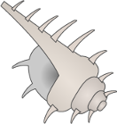

VO_
UWW
MON
T[IM
UMMY
WW
COO
_EV
CGW
WOD
_]
OO_V
! - Booty
$ - Muscles by the belly
& - A good spot for sleeping
( - Very proper
( - Ave., lane, or blvd.
( - NOAA datum
4 - Clock's face
4 - Shell command for parsing and transforming text
4 - Sequence of things
@ - Thirst, in Guadalajara
@ - Eng.'s specialty, maybe
@ - Safety feat. in a vehicle
@ - Who a maj. might answer to
A - Man who arbitrates a sports game
A - Meeting (abbr.)
B - Subpar grades
B - All _____ Children
B - Gorillas in the _____
C - Actor Selleck
D - Div. within a sports league
G - Much _____ About Nothing
H - Cease
H - Dir. from Simmons Hall to Westgate
I - Belonging to number one
L - You put it on the floor by the front door
M - Handheld console produced by Nintendo (abbr.)
P - Phenomenon caused by water droplets suspended in midair
P - Big hoopla
P - It has "Ideas Worth Spreading"
P - A Rasta's way of addressing you, perhaps
P - Vertical region within a spreadsheet (abbr.)
Q - Partner
R - First word of sitcom starring Calista
T - Cause distress to
` - Short-term employee
` - Title for a miracle worker (abbr.)
` - Donkey
a - Hunger Games character
a - Counterpart of an odd?
b - Titular fuzzy bear played by Seth MacFarlane
c - Feel not quite good
d - Sect. in a library
d - Tomorrow, given that yesterday was Sat.
d - One maker of soap products
f - Wheel of Time character
p - Big noisy fight
q - Where flowers may grow
q - Jerry's foe